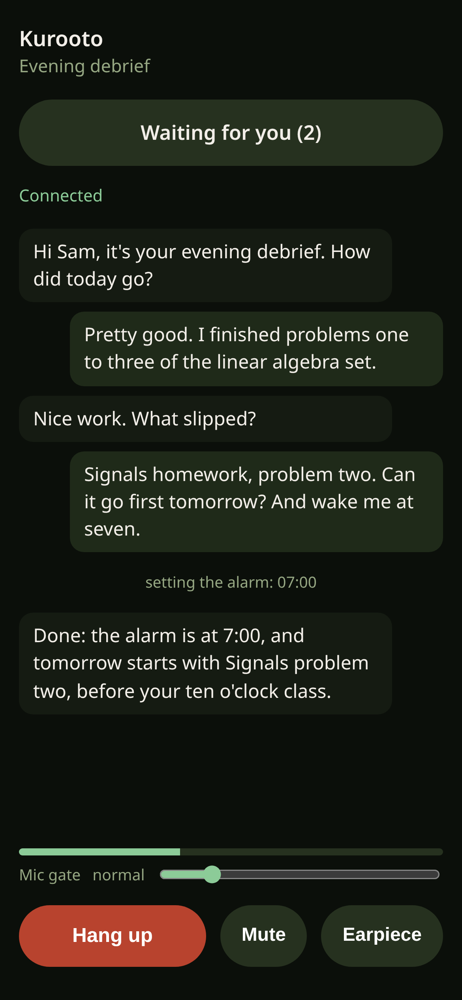
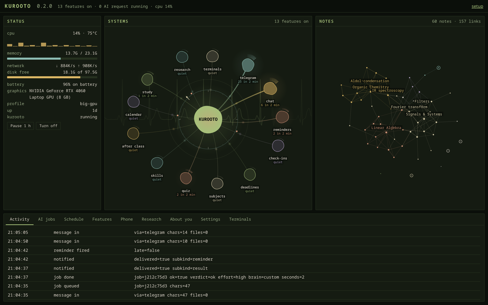
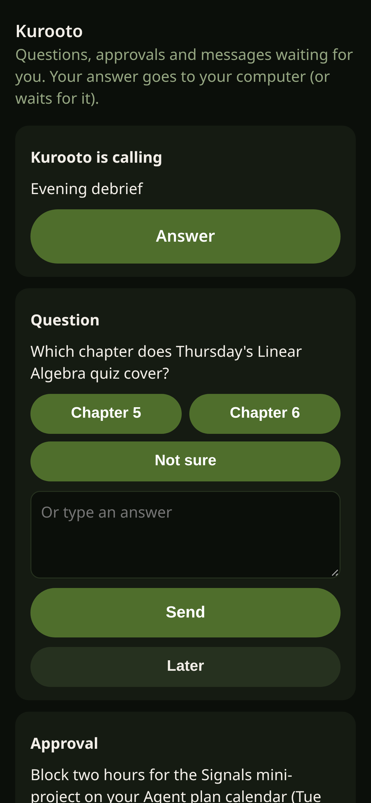
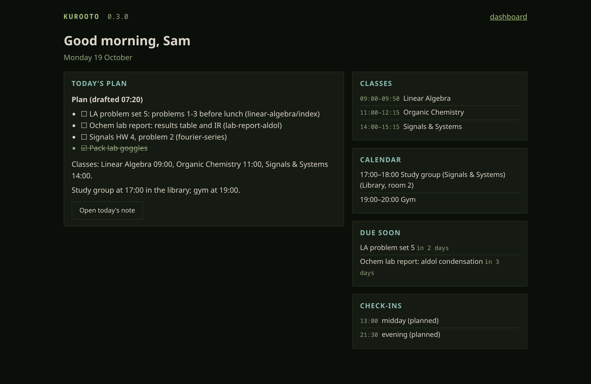
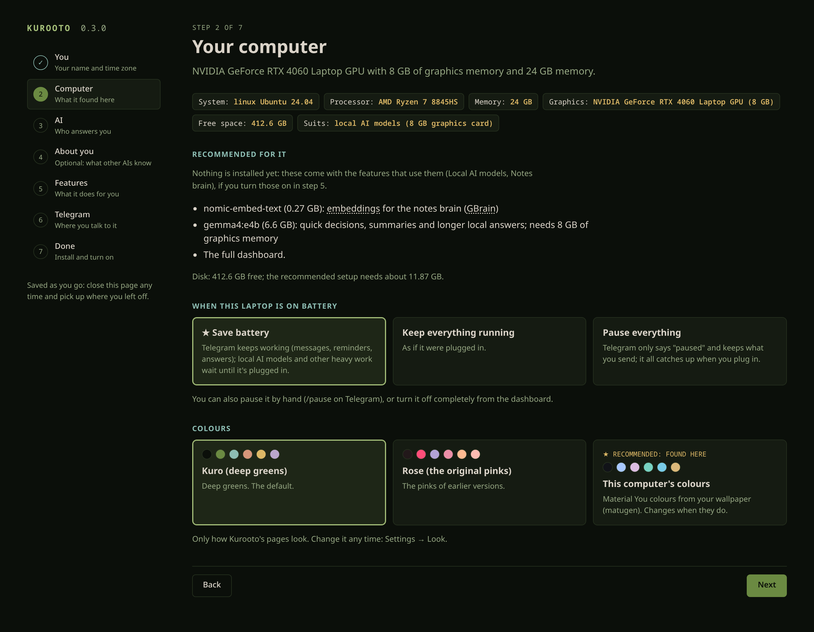
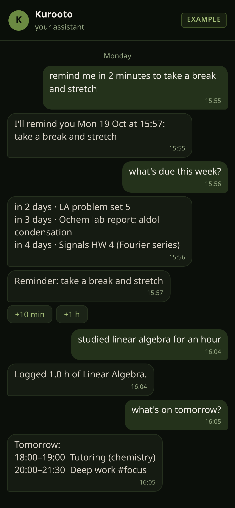

An assistant that fits your day
Kurooto lives on your own computer. It talks to you on Telegram and its phone app, calls you when it matters, and learns the hours you actually keep.
While you slept:
- Read two chapters of your atmosphere book into your notes: 36 concept notes, 94 links.
- Linked last week's handwritten notes to their lecture.
Loose ends:
- Problem set 4 is due Friday 14:00. Start today: about 3 hours.
A day that bends to you
Over the first weeks Kurooto learns when you're actually around, and its day moves to fit. Drag to when you wake.
Wake at 16:00 and watch what happens to the classes you slept through.

The wake-up call is a real call: you talk it through, and it plans the day with you.
- Drafts today's plan into your daily note: classes, what's due, a top three.
- Wake-up call. Your phone rings like an alarm, even on silent, and Kurooto goes through the plan with you.
- Time to start: Problem set 4. About 3 hours, so today is the day.
- Linear Algebra. No calls during class; afterwards it asks what was covered.
- Point Set Topology. No calls during class; afterwards it asks what was covered.
- Check-in before bed. What got done? It moves to when you actually answer.
- Quiet hours. No calls until your alarm.
- While you sleep it reads your books into your notes, tidies links, and checks it hasn't got worse at what you taught it.
One task, one day
First it lands on your list.
Then it gets a start time.
Then it knows how far you got.
Then it's off your mind.




The real screens
Your computer, every feature at work and your notes as a living map, on a page only this computer can open.
Every screen here is Kurooto itself, with sample data for a student called Sam.
It lives with you, not on a server
The Systems view: each feature pulses as it works.
Your computer, your accounts
- It runs on your own Windows, macOS or Linux machine, with no admin rights.
- Your own Telegram bot, your own call line on your free Cloudflare account, your own notes folder.
- You pick the AI: a free Gemini key, Antigravity, Claude Code, FreeLLMAPI, or local models.
Quiet, and honest about itself
- Every feature is off until you turn it on, and says what leaves your computer.
- A daily limit on messages it starts by itself, and a "Less of this" on each one.
- A one-line receipt under every AI answer: which AI, how long, what it actually did.
- It remembers until you ask it to forget:
/forget 7d.
Before you try it
The honest answers, beta and all.

A real chat: reminders, what's due, and buttons to push them back.
Has it been tried on computers like mine?
Not many yet. It's used every day on one Linux laptop, and 1,571 automated tests run on Windows, macOS and Linux, but it's a beta that hasn't met many real PCs. That's exactly why trying it on yours helps.
If something goes wrong, kurooto doctor says what, and kurooto doctor --bundle makes a report you can send, with secrets taken out.
What do I need?
A computer you leave on most of the day, a Telegram account on your phone, and a Google account or a free Gemini key. Phone calls also need a free Cloudflare account; the setup page walks you through it. Android 6 and newer gets the app; an iPhone gets a web app.
Does it cost anything?
No. Kurooto is free and open source (Apache-2.0), and everything it uses has a free tier. If you pick a paid AI you already have, it uses your plan.
Will it bother me?
Only as much as you let it. Every feature is opt-in, messages it starts by itself have a daily limit, each one has "Less of this", and it never calls in class, during focus or in your quiet hours. After ten days it asks which features you actually use.
What leaves my computer?
Only what a feature you turned on needs, and each one says so before you turn it on: your messages go through Telegram, calls through Google's Gemini with your own key, rings through your own call line. The privacy page lists every place.
How does it update?
By itself, at night, from signed releases. If a new version keeps crashing it rolls back on its own. The beta gets each version the day it's signed; stable gets it once it has run on beta for a while.
Something broke. Now what?
Send /fixme: it matches what's wrong to the fix by plain rules, so it works even when the AI is the part that broke. Then tell us on GitHub, with the bundle from kurooto doctor --bundle.
Can I build on it?
Yes. Add-ons, skills and your own AI program all plug in; the developer wiki explains how it's built, for people and for AI agents, and AGENTS.md lets your own agent help you set it up.
Try it tonight
Paste one line and a setup page opens in your browser. Turn on only what you want; nothing changes without a line saying so and an Undo.
Install the beta
For people happy to experiment. Expect rough edges, and tell us what breaks.
$env:KUROOTO_CHANNEL='beta'; irm https://avtarfr.github.io/kurooto/install.ps1 | iex In PowerShell, not as administrator. Prefer the older stable channel?